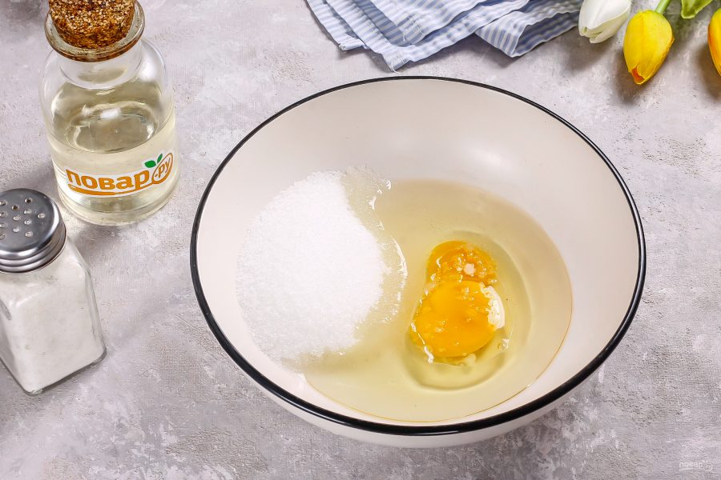

Ингредиенты
1. молоко 210г (мл)
2. яйцо 1 шт.
3. мука 200г
4. разрыхлитель 5 г (1 ч. ложка)
5. масло растительное 25г (2 ст. ложки)
6. свхвр 30 г (2 ст. ложки)
7.соль 1/2 ч. ложки
Приготовление
В ёмкость, выбиваем яйцо и наливаем молоко, добывляем сахар (30 г или 2 ст. ложки) и соль ( 1/2 ч. ложки).
Перемешиваем венчиком до однородного состояния и полного растворения сахара и соли.
Наливаем растительное масло (25 г(~2 ст. ложки) и снова хорошенько перемешиваем.
Добавляем прсеянные муку с разрыхлителем в ёмкость с тестом. Перемешиваем до однородности.Всё, тесто готово! Оно получается не очень густое и довольно хорошо течёт.
Печь надо на сухой сковороде без масла, именно благодаря этому блинчики получаются такие равномерно румяные и гладкие.
Сковородку ставим на средний огонь и хорошо разогреваем. Наливаем тесто на горячую сковороду.
Когда на поверхности налитого теста начнут появляться пузыри, пора переворачивать.
Жарим панкейки с обратной стороны до такого же румяного цвета, как с первой сторны.
Панкейки готовы, не ждите, пока они остынут, ешьте их сразу. Приятного аппетита!
Приятного аппетита!